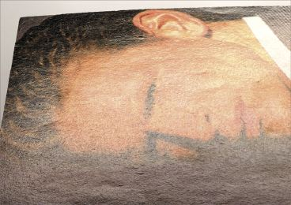
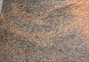
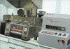
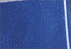
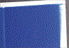

FASERAUFRAUUNG - FIBRE LIFTING
|
Bei der Faseraufrauung handelt es sich um das
Aufstellen von Fasern oder Faserbruchstücken
an der Papieroberfläche nach der
Heißlufttrocknung beim
Heatset-Rollenoffsetdruck (Abb. 1, Abb. 2 und Abb.
3). Es resultieren daraus ein Glanzverlust und ein
ungleichmäßiges Erscheinungsbild des
Druckes. Dies führt zu optischen
Beeinträchtigungen des Druckprodukts.
|

|
|
|
|
|
|
Mögliche Ursachen:
|
|
|
|
Abb. 2: Faseraufrauung.
|
|
|
|

|
|
Abb. 3: Vergrößerter Ausschnitt einer
Aufnahme von Faseraufrauung.
|
|
|
|

|
|
Abb. 4: Mehrzweckprobedruckgerät plus
online-Heißluftrocknung im FOGRA-HOT.
|
|
|
|

|
|
Abb. 5: Probedruckstreifen mit
Faseraufrauung unter Verwendung des
Auflagenpapiers.
|
|
|
|

|
|
Abb. 6: Probedruckstreifen ohne Faseraufrauung
unter Verwendung des Vergleichspapiers.
|
|
|
|

|
|
|
|
|
|

|
|
|
|
|
|

|
|
|
|
|
|
|
Durch die explosionsartige Verdampfung des im Papier
gebundenen Wassers bei der Heißlufttrocknung
lösen sich schlecht gebundene Fasern oder
Faserbruchstücke aus der Verankerung in der
Papieroberfläche. Dies führt zur Erscheinung der
Faseraufrauung.
Der Faseraufrauung liegen entweder Probleme in der
Trocknereinstellung bei der Heatset-Trockung oder
papierbedingte Probleme zugrunde.
Trocknereinstellung:
Wenn in der Trockenstrecke die Heißlufttemperatur zu
hoch eingestellt ist, vergrößert sich die Gefahr
der Faseraufrauung. Durch zu hohe Temperatur steigt der
Wasserdampfdruck im Papiergefüge und führt zum
Ablösen der Fasern an der Papieroberfläche.
Papierbedingte Einflüsse:
Bei zu hoher Papierfeuchte ist der Mengenanteil an Wasser im
Papier zu hoch. Dies führt zu
übermäßiger Verdampfung des Wassers bei der
Heißlufttrocknung und steigert somit die Gefahr der
Faseraufrauung.
Insbesondere holzhaltige Papiere haben eine geringere
Festigkeit bzw. auch Oberflächenfestigkeit
gegenüber holzfreien Papieren. Die Gefahr der
Faseraufrauung ist deshalb bei holzhaltigen Papieren
größer.
|
Mögliche Abhilfen:
|
|
Im Heat-set-Rollenoffset ist darauf zu achten, dass die
Temperatur im Trockner nicht zu hoch ist, da sonst Probleme,
wie Faseraufrauung, Falzbrechen oder Blasenbildung
auftreten.
Die Ausgangsfeuchte des Papiers sollte max. 45 % relative
Feuchte nicht übersteigen.
Holzfreie Papiere haben bessere Festigkeitseigenschaften und
neigen gegenüber holzhaltigen Papieren weniger zur
Faseraufrauung.
|
Beispiel(e):
|
|
Um den papierbedingten Einfluss auf eine Reklamation
bezüglich Faseraufrauung zu prüfen, wurden das
beanstandete Auflagenpapier und ein nicht beanstandetes
Vergleichspapier zur Untersuchung eingesandt. Die Papiere
wurden im Mehrzweckprobedruckgerät mit Heatset-Farbe
bedruckt und anschließend im
Labor-Heißlufttrockner FOGRA-HOT unter definierten
Bedingungen praxisnah getrocknet (Abb. 4).
Einstellungen im Heißlufttrockner:
Heißlufttemperatur in den 3 Kammern: 280 °C/ 240
°C/ 100 °C
Verweilzeit in der Trockenzone: 1 Sekunde
Oberflächentemperatur: 115 °C
Die Probedruckstreifen zeigten nach dem Test am
beanstandeten Auflagenpapier eine deutliche Neigung zur
Faseraufrauung (Abb. 5) und beim unter gleichen Bedingungen
getesteten Vergleichspapier keine Faseraufrauung (Abb.
6).
Die Ausgangsfeuchten beider Papiersorten unterschieden sich
nicht erheblich. Insgesamt wies also das beanstandete
Auflagenpapier gegenüber dem Vergleichspapier eine
schlechtere Verankerung der Fasern in der
Papieroberfläche auf, was letztendlich als Ursache
für die Faseraufrauung genannt wurde.
|
Allgemeine Hinweise:
|
|
Für den Reklamationsfall:
Unbedruckte Papierproben des Auflagenpapiers und evtl. des
Vergleichspapiers sicherstellen (10 Blatt DIN A4).
Reklamierte Muster sicherstellen.
Produktionsdaten protokollieren.
Ergänzende Literatur:
TAYLOR, J. E.:
Heatset Offset Ink/Paper Compatibility Considerations.
In: Professional Printer, JG. 42, Nr. 3, 1998, S. 11 - 15,
Englisch
TAYLOR, J. E.:
Development Considerations of Light Weight Coated Papers for
modern web offset printing.
In: Ink Print int., JG. 16, Nr. 1, 1998, S. 10 - 12,
Englisch
|
|
|
|
|
|
|
Kontakt:
wimmerm@fogra.org
|
Fas-mw-200111
|